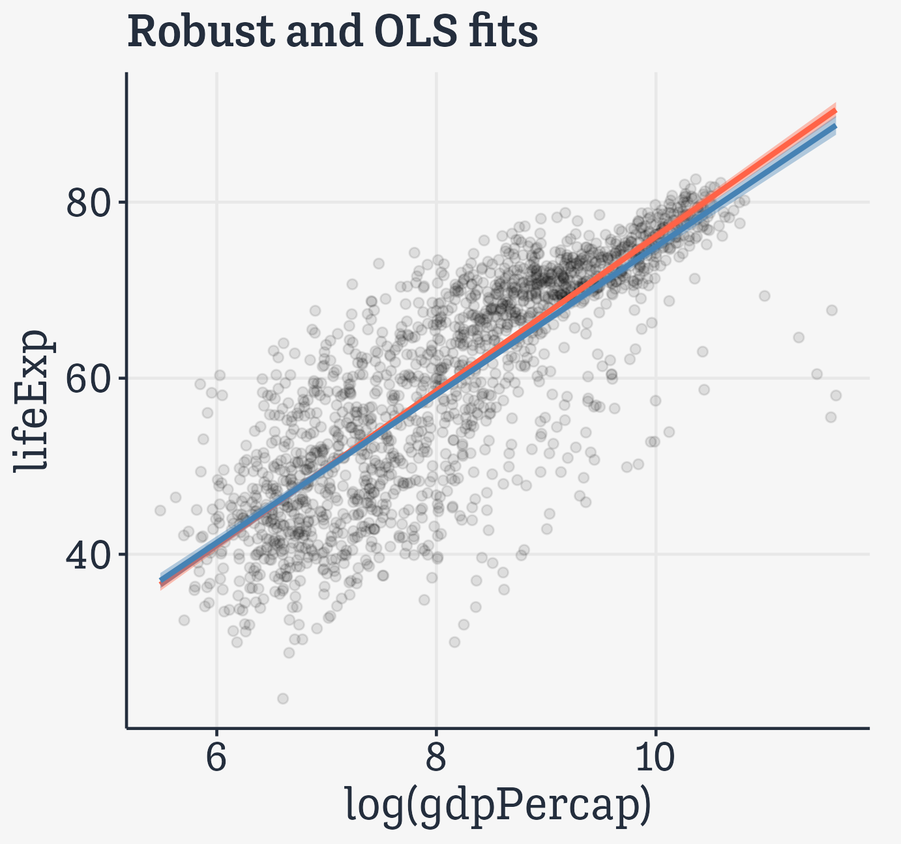
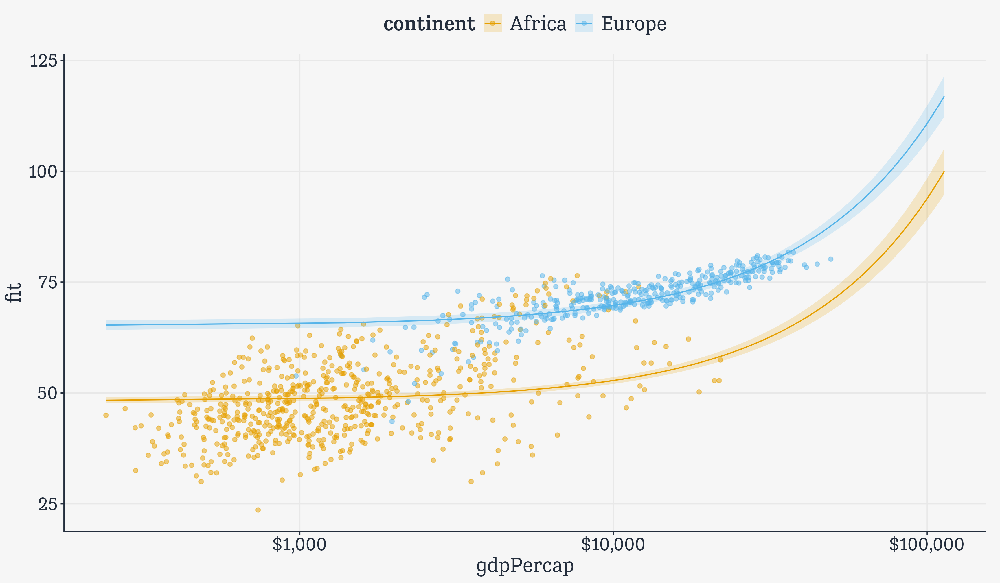

library(here) # manage file pathslibrary(socviz) # data and some useful functionslibrary(tidyverse) # your friend and minelibrary(gapminder) # Everyone's favorite datasetlibrary(broom) # Tidy model outputlibrary(marginaleffects) # Tidy marginal effectslibrary(modelsummary) # Tidy summary tables and graphslibrary(scales) # Format our axes and guides
Attaching package: 'scales'
The following object is masked from 'package:purrr':
discard
The following object is masked from 'package:readr':
col_factor
ggplot can work with models
We know because geoms often do calculations in the background, via their stat functions.
p <- gapminder |>ggplot(mapping =aes(x =log(gdpPercap), y = lifeExp)) p +geom_point(alpha=0.1) +geom_smooth(color ="tomato", fill="tomato", method = MASS::rlm) +geom_smooth(color ="steelblue", fill="steelblue", method ="lm") +labs(title ="Robust and OLS fits")

These can be complex …
p +geom_point(alpha=0.1) +geom_smooth(color ="tomato", method ="lm", size =1.2, formula = y ~ splines::bs(x, 3), se =FALSE)
predict() and its methods do a lot of work behind the scenes
We won’t usually need to do this stuff manually. But the idea is that the generic predict() function has methods for specific sorts of models. Give it a model and some new data and it will produce predicted values for the new data. Here’s an example.
The labor-intensive way
min_gdp <-min(gapminder$gdpPercap)max_gdp <-max(gapminder$gdpPercap)med_pop <-median(gapminder$pop)# Make a grid of predictor valuespred_df <-expand_grid(gdpPercap = (seq(from = min_gdp,to = max_gdp,length.out =100)),pop = med_pop,continent =c("Africa", "Americas","Asia", "Europe", "Oceania"))pred_df
# A tibble: 500 × 3
gdpPercap pop continent
<dbl> <dbl> <chr>
1 241. 7023596. Africa
2 241. 7023596. Americas
3 241. 7023596. Asia
4 241. 7023596. Europe
5 241. 7023596. Oceania
6 1385. 7023596. Africa
7 1385. 7023596. Americas
8 1385. 7023596. Asia
9 1385. 7023596. Europe
10 1385. 7023596. Oceania
# ℹ 490 more rows
The labor-intensive way
# Get the predicted valuespred_out <-predict(object = out,newdata = pred_df,interval ="confidence")head(pred_out)
# Bind them into one data frame. We can do this safely# here because we know the row order by construction. # But this is not a safe approach in general.pred_df <-cbind(pred_df, pred_out)head(pred_df)
gdpPercap pop continent fit lwr upr
1 241.1659 7023596 Africa 48.35388 47.67735 49.03041
2 241.1659 7023596 Americas 61.43646 60.43917 62.43375
3 241.1659 7023596 Asia 56.13821 55.22045 57.05597
4 241.1659 7023596 Europe 65.30361 64.21794 66.38927
5 241.1659 7023596 Oceania 65.99517 62.55277 69.43757
6 1385.4282 7023596 Africa 48.87530 48.20261 49.54799
The labor-intensive way
p <-ggplot(data =subset(pred_df, continent %in%c("Europe", "Africa")),aes(x = gdpPercap,y = fit, ymin = lwr, ymax = upr,color = continent,fill = continent,group = continent))# Use the original data as the point layerp_out <- p +geom_point(data =subset(gapminder, continent %in%c("Europe", "Africa")),mapping =aes(x = gdpPercap, y = lifeExp,color = continent),alpha =0.5,inherit.aes =FALSE) +# And the predicted values to draw the lines geom_line() +geom_ribbon(alpha =0.2, color =FALSE) +scale_x_log10(labels = scales::label_dollar())

Usebroomto tidy models
We can’t do anything with this
out <-lm(formula = lifeExp ~ gdpPercap +log(pop) + continent, data = gapminder)summary(out)
Residual standard error: 8.336 on 1697 degrees of freedom
Multiple R-squared: 0.585, Adjusted R-squared: 0.5835
F-statistic: 398.7 on 6 and 1697 DF, p-value: < 2.2e-16
Residual standard error: 8.336 on 1697 degrees of freedom
Multiple R-squared: 0.585, Adjusted R-squared: 0.5835
F-statistic: 398.7 on 6 and 1697 DF, p-value: < 2.2e-16
Residual standard error:8.336 on 1697 degrees of freedomMultiple R-squared:0.585, Adjusted R-squared:0.5835F-statistic:398.7 on 6 and 1697 DF, p-value:<2.2e-16
## Hazard modelout_cph <-coxph(Surv(time, status) ~ age + sex, data = lung)summary(out_cph)
Call:
coxph(formula = Surv(time, status) ~ age + sex, data = lung)
n= 228, number of events= 165
coef exp(coef) se(coef) z Pr(>|z|)
age 0.017045 1.017191 0.009223 1.848 0.06459 .
sex -0.513219 0.598566 0.167458 -3.065 0.00218 **
---
Signif. codes: 0 '***' 0.001 '**' 0.01 '*' 0.05 '.' 0.1 ' ' 1
exp(coef) exp(-coef) lower .95 upper .95
age 1.0172 0.9831 0.9990 1.0357
sex 0.5986 1.6707 0.4311 0.8311
Concordance= 0.603 (se = 0.025 )
Likelihood ratio test= 14.12 on 2 df, p=9e-04
Wald test = 13.47 on 2 df, p=0.001
Score (logrank) test = 13.72 on 2 df, p=0.001
A Kaplan-Meier Curve
Then we create the survival curve, which is nearly tidy out of the box:
## Hazard modelout_surv <-survfit(out_cph)## See how this is just a print method,## not a tibble, or even a data frame.## So it just runs off the end of the slide.summary(out_surv)
The simplest cases are not that different from the vectorized arithmetic we saw before.
a <-c(1:10)b <-1# You know what R will do herea + b
[1] 2 3 4 5 6 7 8 9 10 11
Isn’t this like … Vectorized arithmetic?
The simplest cases are not that different from the vectorized arithmetic we saw before.
a <-c(1:10)b <-1# You know what R will do herea + b
[1] 2 3 4 5 6 7 8 9 10 11
R’s vectorized rules add b to every element of a. In a sense, the + operation can be thought of as a function that takes each element of a and does something with it. In this case “add b”.
Repeatedly applying a function
We can make this explicit by writing a function:
a <-c(1:10)add_b <-function(x) { b <-1 x + b # for any x}
Now:
add_b(x = a)
[1] 2 3 4 5 6 7 8 9 10 11
In effect we take the vector a and feed it to the add_b() function one element at a time.
Repeatedly applying a function
Again, R’s vectorized approach means it automatically applies add_b() to every element of the x we give it.
add_b(x =10)
[1] 11
add_b(x =c(1, 99, 1000))
[1] 2 100 1001
Iterating in a pipeline
Some operations can’t directly be vectorized in this way, most often because the function we want to apply only knows what to do if it is handed, say, a vector. It doesn’t understand what to do if it’s handed a list of vectors or a tibble of them, etc. This is when we might find ourselves manually iterating—writing out every single step explicitly.
That’s tedious to write! Computers are supposed to allow us to avoid that sort of thing.
Iterating in a pipeline
So how would we iterate this? What we want is to apply the n_distinct() function to each column of gapminder. But we can’t easily write a loop inside a pipeline. We want a way to iterate that lets us repeatedly apply a function without explicitly writing a loop.
# A tibble: 60 × 3
# Groups: continent, year [60]
continent year data
<fct> <int> <list>
1 Asia 1952 <tibble [33 × 4]>
2 Asia 1957 <tibble [33 × 4]>
3 Asia 1962 <tibble [33 × 4]>
4 Asia 1967 <tibble [33 × 4]>
5 Asia 1972 <tibble [33 × 4]>
6 Asia 1977 <tibble [33 × 4]>
7 Asia 1982 <tibble [33 × 4]>
8 Asia 1987 <tibble [33 × 4]>
9 Asia 1992 <tibble [33 × 4]>
10 Asia 1997 <tibble [33 × 4]>
# ℹ 50 more rows
Think of nesting as a kind of “super-grouping”. Look in the object inspector.
Grouped analysis and list columns
Europe ’77 is still in there.
out_le |>filter(continent =="Europe"& year ==1977) |>unnest(cols =c(data))
# A tibble: 30 × 6
# Groups: continent, year [1]
continent year country lifeExp pop gdpPercap
<fct> <int> <fct> <dbl> <int> <dbl>
1 Europe 1977 Albania 68.9 2509048 3533.
2 Europe 1977 Austria 72.2 7568430 19749.
3 Europe 1977 Belgium 72.8 9821800 19118.
4 Europe 1977 Bosnia and Herzegovina 69.9 4086000 3528.
5 Europe 1977 Bulgaria 70.8 8797022 7612.
6 Europe 1977 Croatia 70.6 4318673 11305.
7 Europe 1977 Czech Republic 70.7 10161915 14800.
8 Europe 1977 Denmark 74.7 5088419 20423.
9 Europe 1977 Finland 72.5 4738902 15605.
10 Europe 1977 France 73.8 53165019 18293.
# ℹ 20 more rows
Grouped analysis and list columns
Here we write a tiny, very specific function and map() it to every row in the data column.
It includes a range of plotting methods, to produce graphics directly.
These are built on ggplot. Similarly integration with broom means that you can use the package-specific plotting functions take the tidy output and adapt it to your own needs.
Also check out modelsummary, by the same author, for quick and flexible summaries of models and datasets. Again, this sort of package is very convenient to use directly. But with just a little facility with R and tidyverse-style idioms and patterns, you’ll get even more out of it. You’ll better understand how to adapt it and why its functions work as they do.
Complex Surveys with the surveyandsrvyr packages
Working with complex surveys
As always, our question is “What’s the smoothest way for me to get a tidy table of results I need to hand off to ggplot?”
For complex surveys, we use survey, the standard package for survey analysis in R, and srvyr, a helper package designed to integrate what survey can do with the Tiydverse framework.
## Load the packageslibrary(survey)library(srvyr)
Example: The GSS again
This time, a small piece of the full GSS from the early 1970s to 2018.
gss_lon
# A tibble: 62,466 × 25
year id ballot age degree race sex siblings kids bigregion income16
<dbl> <dbl> <labe> <lab> <fct> <fct> <fct> <fct> <fct> <fct> <fct>
1 1972 1 NA 23 Bache… White Fema… 3 0 Midwest <NA>
2 1972 2 NA 70 Lt Hi… White Male 4 4+ Midwest <NA>
3 1972 3 NA 48 High … White Fema… 5 4+ Midwest <NA>
4 1972 4 NA 27 Bache… White Fema… 5 0 Midwest <NA>
5 1972 5 NA 61 High … White Fema… 2 2 Midwest <NA>
6 1972 6 NA 26 High … White Male 1 0 Midwest <NA>
7 1972 7 NA 28 High … White Male 6+ 2 Midwest <NA>
8 1972 8 NA 27 Bache… White Male 1 0 Midwest <NA>
9 1972 9 NA 21 High … Black Fema… 2 2 South <NA>
10 1972 10 NA 30 High … Black Fema… 6+ 4+ South <NA>
# ℹ 62,456 more rows
# ℹ 14 more variables: religion <fct>, marital <fct>, padeg <fct>, madeg <fct>,
# partyid <fct>, polviews <fct>, happy <fct>, partners_rc <fct>, grass <fct>,
# zodiac <fct>, pres12 <labelled>, wtssall <dbl>, vpsu <dbl>, vstrat <dbl>
Add the weighting information
# These details are dependent on the kind of survey you're working withoptions(survey.lonely.psu ="adjust")options(na.action="na.pass")gss_svy <- gss_lon |>filter(year >1974) |>mutate(stratvar =interaction(year, vstrat)) |>as_survey_design(ids = vpsu,strata = stratvar,weights = wtssall,nest =TRUE)gss_svy # Now it's no longer simply a tibble
# A tibble: 162 × 5
# Groups: year, race [30]
year race degree prop prop_se
<dbl> <fct> <fct> <dbl> <dbl>
1 1976 White Lt High School 0.327 0.0160
2 1976 White High School 0.517 0.0161
3 1976 White Junior College 0.0128 0.00298
4 1976 White Bachelor 0.101 0.00955
5 1976 White Graduate 0.0392 0.00642
6 1976 White <NA> 0.00285 0.00151
7 1976 Black Lt High School 0.558 0.0603
8 1976 Black High School 0.335 0.0476
9 1976 Black Junior College 0.0423 0.0192
10 1976 Black Bachelor 0.0577 0.0238
# ℹ 152 more rows
# A tibble: 30 × 3
# Groups: year [10]
year race tot
<dbl> <fct> <dbl>
1 1976 White 1.00
2 1976 Black 1.00
3 1976 Other 1
4 1980 White 1.00
5 1980 Black 1
6 1980 Other 1
7 1984 White 1.00
8 1984 Black 1.00
9 1984 Other 1
10 1988 White 1.00
# ℹ 20 more rows